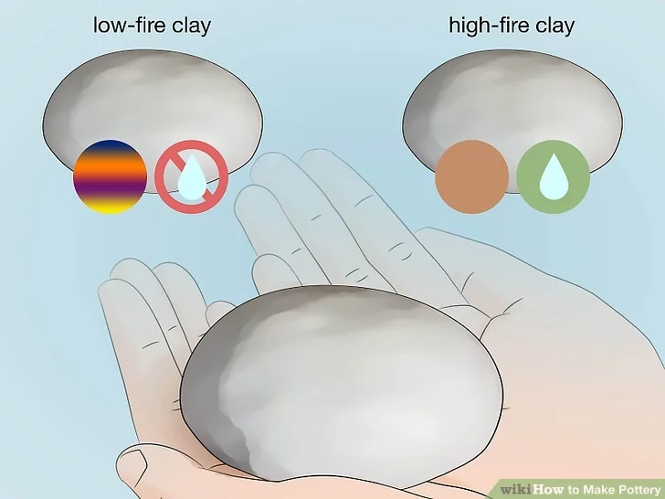
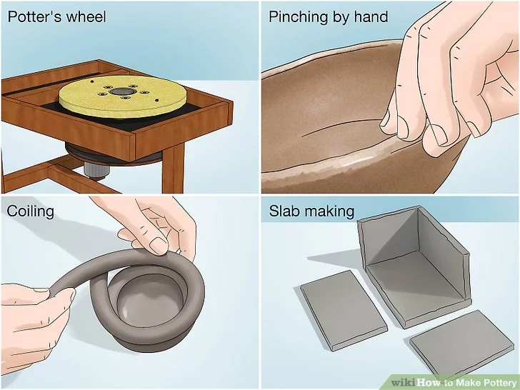
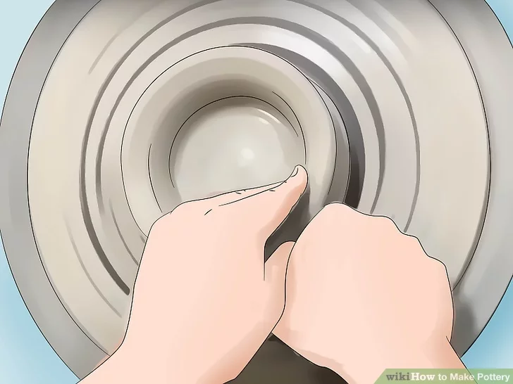
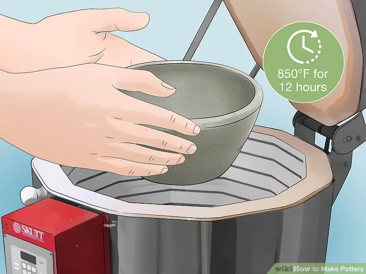
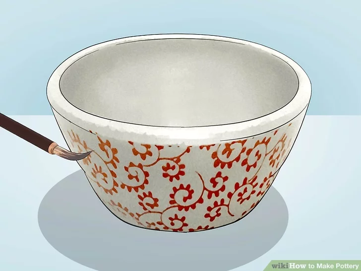
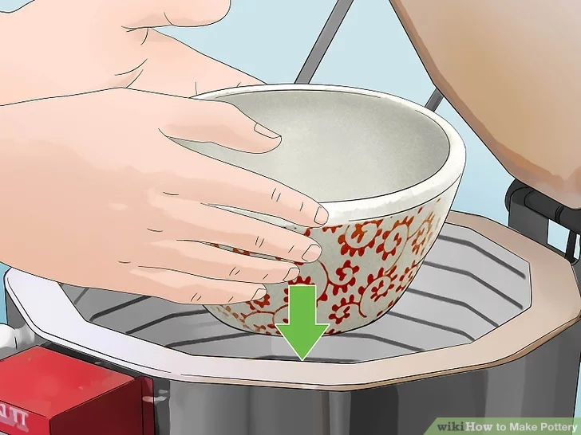
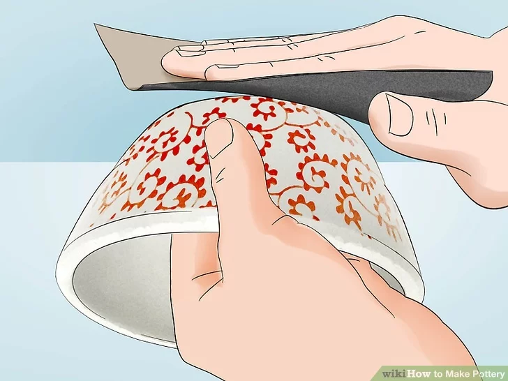

|  |
step 1 :
Pick your clay. To pick the right clay for your project, determine where you will be firing and check what the cone firing temperature will be. Both low-fire and high-fire commercial glazes are available in a wide array of colors. You might consider air dry clay, which doesn't need to be fired.[1] But it's a bit expensive, so you might want to stick to smaller creations. Alternatively, Fimo clay is baked in a regular oven and already comes in various colors which can be blended together. Otherwise, there's low-fire or high-fire clays, and they warrant different results.[2]
Low-fire clays are great for bright colors and detailed decoration. But they're not super good in water, so if you do go for low-fire clay, get a glaze that you know will seal 'er up.
High-fire clays aren't so great with bright colors, but they're sturdy, waterproof, and can be texturized easily. Glazes may move when fired, so detailed images could get blurred.[3] |
|  |
step 2 :
Decide which method will work best for your project. You have a few options to choose from:[4]
Potter's wheel: Best for bowls or plates, vases or anything you need to be symmetrical and round, it takes a lot of practice to get really skillful at this.[5] It also requires a kiln and knowledge of firing and glazes. It's good for large and small objects, but again it is tough to rework if mistakes happen initially.
Pinching by hand: Best for small objects.[6] The method is fairly straightforward: Start off with a small amount of clay that you can work with in your palms. Mold it with pressure from your thumb and index finger and keep turning it in your other palm if you want it round, and keep the "walls" even.[7] Use a damp sponge to smooth the surface.
Coiling:[8] Best for hollow or non symmetrical objects. You can create an interesting texture or pattern by or coiling layers together. Instead of one block of clay, you simply pile or coils into a shape.[9] They adhere together with slip and create one mass.
Slab making: Best for flat-sided objects.[10] You put the sides of the clay onto a form. Use a plastic bag so it won't stick or use a light coating of cooking oil. As it dries remove it from the original form, it will shrink and possibly crack if left draped over a bowl but it will maintain its shape. |
|  |
step 3 :
Form away. This is up to you and your skill level. If you have a wheel, great. If you don't, there are ways around that. If you're brand new to pottery, seek out a professional or watch a few videos online; it's an art that requires skill, most definitely.
Some clays aren't able to be molded, shaped back into a ball, and molded again. So when you make your choices, be careful -- your clay may not be too keen on giving you a second chance. |
|  |
step 4 :
Place the pottery in an electric kiln. Raise the temperature of the kiln to 850°F (455°C) for 12 hours. This will produce "bisque" or "unglazed pottery." This initial firing removes the physical and chemical water so that the piece can be glazed without returning to mud and breaking. Ranges of temperature are referred to as "cones" in the ceramics world.[11]
Allow the temperature to drop and remove the pottery 48 hours later after the temperature has completely cooled.
Bisque temperature is approximately 1,850–1,950 °F (1,010–1,070 °C) for a cone 06-04 firing for bisque. Cone 6 is 2,180–2,232 °F (1,193–1,222 °C) and Cone 10 is 2,300–2,400 °F (1,260–1,320 °C).. |
|  |
step 5 :
Paint your object with glaze.[12] Keep in mind that glaze will run. Cover the bottom of your pottery with wax to shield it from sticking to the kiln shelf itself. If you want more precise lines, paint with "bisque stain" and then cover with a clear glaze.[13]
If your surface isn't smooth, use a 100 grit sandpaper or a kitchen paring knife edge to make it so. Then sponge the entire surface of the pot to remove any dust left from sanding to provide a clean surface for the glaze to adhere to.
Glazing takes on a number of forms. You can dip, brush, sponge, or etch -- just to get the list started. Use wax to keep the bottom from getting glaze on it during firing. You can also buy glazes in liquid or dry form. If you want to be a real pro, eventually you can make your own.
|
|  |
step 6 :
Reheat the pottery to melt the glaze and seal your object.[14] Depending on your clay, the size of the object, and the glaze, you may need a kiln that hits 2500° Fahrenheit (1148° C).[15]
Overnight, warm up your kiln at very low heat. Spend two hours at low heat (an increase in temperature of no more than 200°F per hour) and then two hours at medium heat (an increase in temperature of no more than 300°F per hour). Finally, finish at high heat (an increase in temperature of 300 to 400°F per hour) until the required temperature has been reached.
|
|  |
step 7 :
File down the bottom of your object. It may have rested on the bottom of the kiln in an awkward position, forcing it to lose its flat bottom. Smooth it so that it sits without wobbling on a surface such as a table or shelf.
Add felt onto the bottom of your object if you so desire. Then, admire your finished product! |